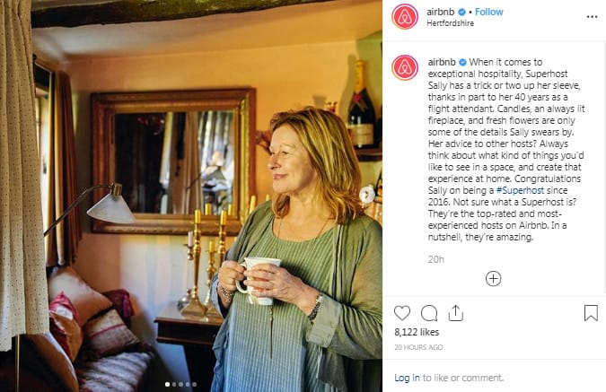
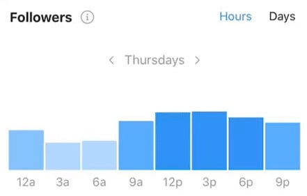
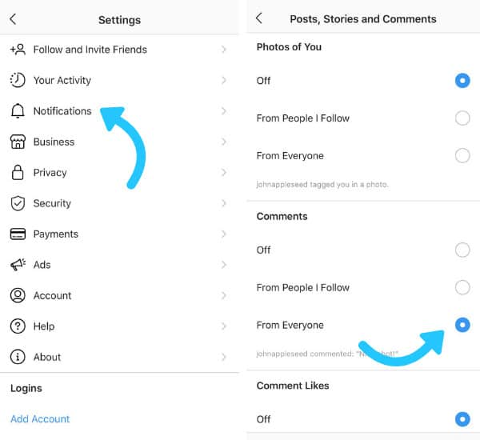
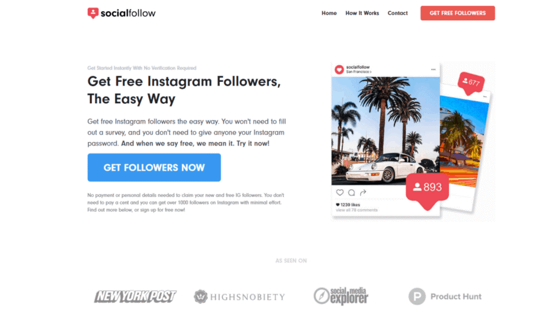

It’s time for a conversation about the Instagram algorithm.
Talk to virtually any social media marketing expert about success on Instagram, and there’s a good chance that they’ll have something to say about the new Instagram algorithm and how it works.
That’s because just like any other search engine or social media tool, Instagram uses its algorithm to determine which businesses, brands, and influencers come out on top.
Back in 2018, the web was rocked by the sudden Facebook algorithm update that made achieving organic reach online practically impossible. Meanwhile, Facebook’s child company, Instagram, continues to roll out new updates intended to prioritize the “moments you care about.”
So, how does the Instagram algorithm work, and how can you make sure that you’re prepared to deliver the content that your audience is looking for in this new age of social media?
We’re here to make things clear.
How Does the New Instagram Algorithm Actually Work?
Let’s start with the basics.
As of October 2019 (the time we’re writing this post), Instagram’s algorithm uses three key factors to determine exactly where content should appear in a user’s feed.
Those factors are:
- Recency: While Instagram’s basic chronological feed is long gone, it’s still important to post your content at a time when your audience is active. More recent posts are favored and pushed to the top of the feed. Older posts appear a little further down.
- Interest: Instagram wants to deliver the kind of content your audience is most interested in. If your target audience is already engaging with similar content to whatever you post, it’s more likely that they’ll also see your material on their Explore page.
- Relationship: If people have interacted with your posts a lot in the past, then they might see your new content above the material from other people when they’re browsing through their news feed.
It makes sense so far.
Although understanding the new Instagram algorithm might not be rocket science, it’s safe to say that mastering Instagram has grown increasingly difficult since the chronological feed got the boot. The good news is that once you understand what Instagram is looking for in its top-ranking posts, you can start to adjust your content accordingly.
Here are our top tips for mastering the Instagram algorithm.
1. Create Content Your Audience Will Care About
This might sound like an obvious suggestion, but sometimes it’s easy to forget that there’s more to surviving on Instagram than delivering plenty of high-quality photos. Instagram isn’t just basing your Explore feed on who you follow, it’s also looking at who and what you care about too.
For instance, let’s take a look at this post from Airbnb:

https://www.instagram.com/p/B3pbxq5nlgs/
The social home-sharing site could focus on simply publishing photos of the homes available for rent and leave it at that. But then, how would Airbnb’s photos stand out from any other picture of a house?
To convince Instagram that they deserve to show up higher on the news feed, Airbnb adds extra snippets to its posts in the caption area that give each viewer some useful information about the location in the image. In other words, the company is giving you a reason to care about each specific photo. In the example above, Airbnb uses an inspiring and emotional caption to encourage thousands of comments, likes, and other forms of interaction.
It’s this emotional engagement that tells Instagram how much people care about Airbnb’s content. Next time you’re publishing a post on Instagram, ask yourself:
- Why will my audience care about this picture?
- How can I start a conversation with my followers?
- What makes this picture more interesting?
2. Be Consistent with your Schedule
One of the key things that the Instagram algorithm considers when deciding what to do with your content, is “recency”. That doesn’t mean that you have to post something new every hour of the day to reach as many customers as possible, but it does mean that you need to find a schedule that works for you and stick with it.
Basically, Instagram wants to make sure that you’re getting relevant content that isn’t out-of-date. There’s no point in you seeing a picture that advertises a new deal from your favorite brand if that offer ran out yesterday. Finding out your personalized best time to post on Instagram will get you ahead of the Instagram algorithm in no time.
The good news? If you head into your Instagram insights, you can see exactly when your users are most likely to be online by tapping into the “Followers” Tab:

If your followers are most active between the hours of 12 pm and 3 pm on Thursdays, then you know that you should have a post scheduled and ready to go out at that time every week. Thanks to updates in the Instagram algorithm, you can also make sure that you’re prepped for long-term success with your schedule by using apps like Later to plan your posts and set them to publish at the perfect time.
Being consistent with your posting schedule won’t just improve your chances of hacking the algorithm from a recency perspective, it will also strengthen your relationship with your customers too. If they know that they can rely on you to post at the same time each day, then they’re sure to make sure that they get online at the right time.
3. Get Real about Follower Relationships
Experts in the social media marketing world believe that Instagram not only prioritizes the posts that have high engagement (likes and comments), but also the profiles that have higher engagement too. Ultimately, there’s more to building a relationship with your followers then getting them to act with your posts. You also need to be willing to strengthen your connection with the people in your community by responding to their direct messages and answering their questions.
Since keeping track of all your Instagram comments isn’t always easy – particularly as your social presence begins to grow, start by choosing more focused notification settings for your Instagram profile. Go to your account settings and click on “notifications,” then turn everything but your comments off. This means that you can track your conversations more easily.

Remember that you can now also reply to the direct messages that customers send you on Facebook and Instagram from your desktop with the Unified Pages Inbox. This tool basically allows you to manage all of your comments and messages in the same environment, without having to constantly switch between apps.
With the unified pages inbox and the right notifications in place, you’ll be able to develop a strategy that works on building real, valuable relationships with every follower on your page.
Neat, right?
4. Invest More in Video
Just because Instagram didn’t say that it was prioritizing video as part of the new Instagram algorithm, doesn’t mean that it’s not worth updating your video strategy. You might need to read between the lines a little, but if you do your research, it’s pretty easy to see that the Instagram algorithm update has placed increased focus on video content.
Ultimately, Instagram has been pushing a lot of focus onto its IGTV platform in recent months. There’s even an Explore page specifically dedicated to IGTV.
It’s clear that Instagram wants IGTV to be a big deal. That means that if you give Instagram what they want and create more videos, you can benefit in return. Right now, there are 3 categories on IGTV:
- For You: The content that Instagram thinks you’re going to like, made up of posts from people you follow, and content similar to what you look at.
- Following: A selection of videos from the people that you’re actively following through IGTV.
- Popular: Featuring all the trending videos on Instagram.
So, how do you appear on those all-important “For You” and Popular” pages?
Well, start by sharing previews of your video in the Instagram feed. Instagram allows users to see a small snippet of your Instagram video in the feed, which can convince them to click through to your channel, and therefore highlight your brand as a trending content producer.
Remember, your video content doesn’t need to be a Hollywood-style production. A simple Boomerang or time-lapse video could be enough to delight your audience. What matters right now is that you’re investing in video – just like Instagram.
5. Follow the Right People
Here at SocialFollow.co, we’re big fans of the reciprocity effect.
In other words, we believe that following the right people will earn you followers in return. That doesn’t mean that we ask our users to rush out and “follow” everyone in a ten-mile radius though. That would be just bad business.
Today, the Instagram algorithm is paying more attention to the people that you follow. If you follow more people than you have following you, then there’s a chance that you’re going to be deemed spammy. People who follow too many people too quickly come under scrutiny, as they’re often trying to use follow4follow strategies and other outdated concepts.
However, if you follow a few of the right people, like thought leaders in your industry, marketplace influencers, or people with strong connections in your space, then your actions have a different effect.
Following the right people shows Instagram exactly who you want to be associated with, so they know what kind of content your company’s posts should be appearing alongside.

Just like in Search Engine Optimization, where you can improve your reputation as a brand by getting backlinks from other leading companies, following the right people on Instagram can boost your credibility too. Think carefully before you hit the “Follow” button.
6. Keep Harnessing the Power of Hashtags
Hashtags are another thing that Instagram failed to mention when it was talking about the new Instagram algoritm, or the way that it organizes posts. However, for as long as Instagram has existed, hashtags have been essential part of how the system works.
Hashtags are tools that help to attract the right people to your posts. They’re kind of like keywords in a search engine, telling people what they can expect to get from your content. Including hashtags in your content strategy ensures that you’re always going to have searchable content, which means that you can improve engagement with would-be and current followers.
In the example above, HelloFresh shows us how you can use one of the most valuable kinds of hashtag in the current industry to transform your Instagram profile. Using branded hashtags like #HelloFreshPics encourages people to get more involved with your business. Every time someone posts a picture with the tag #HelloFreshPics, or comments on a post with that tag, they’re deepening their relationship with the brand.

You know what that means?
Yep, better rankings with the Instagram algorithm.
When in Doubt, Increase Content Production
Finally, if you think you’re more or less on the right track when it comes to creating content that your audience cares about, and engaging with your followers as often as possible, then there’s just one thing left to do:
Create more content.
Back in 2018, Instagram said that “posting often” is in the best interests of anyone who wants to excel on the social media platform. The more you post, the more you’ll be able to experiment with new ideas, videos, and strategies to help you strengthen your relationships with your followers.
At the same time, frequent posting means that you’ll reach people at different times on the app thanks to the new recency ranking factor in the Instagram algorithm update.
Just remember that posting more often doesn’t mean giving up on quality. You’ll still need to produce the amazing content that your customers know and love – just do it a bit more often.
If you’re having trouble with that, or anything else in the Instagram algorithm, reach out to Socialfollow.co today. We’ll help you build the perfect strategy for Instagram growth.